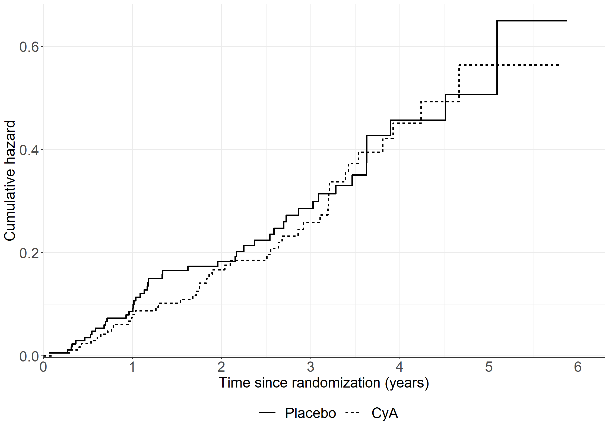
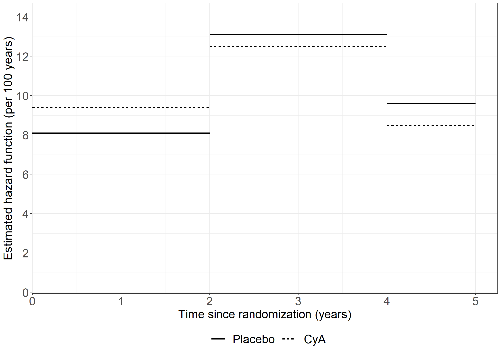
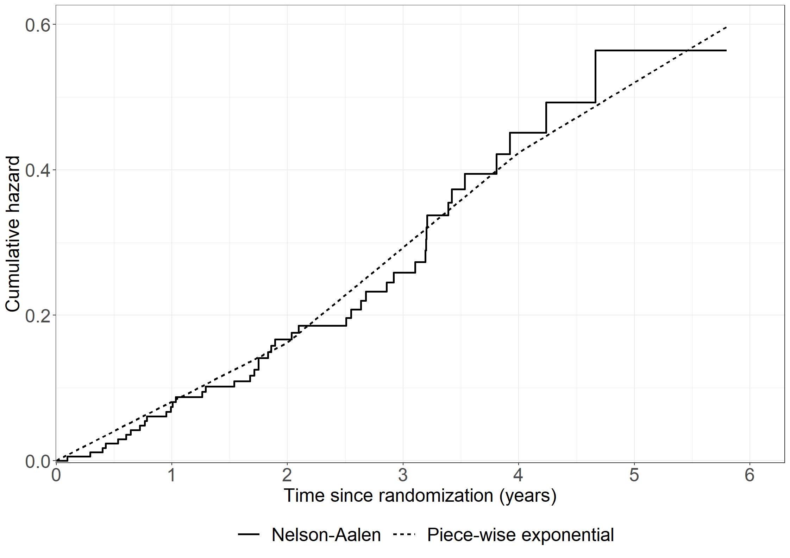
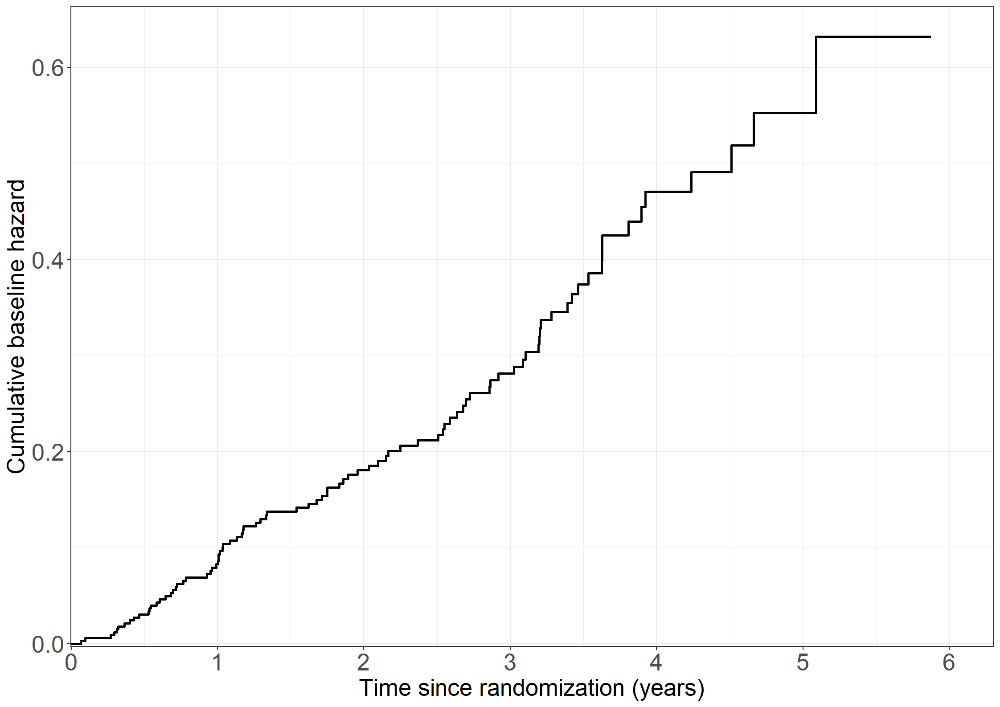
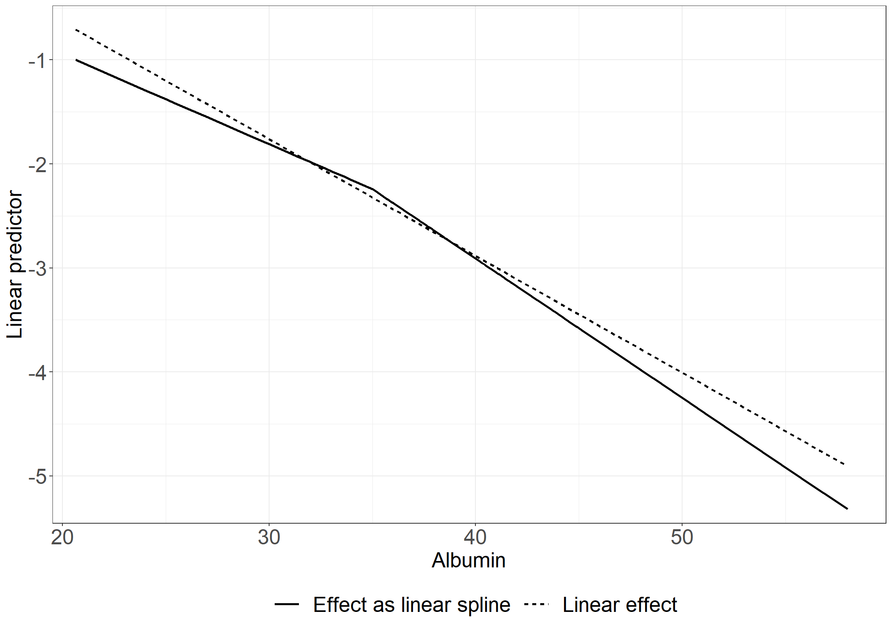
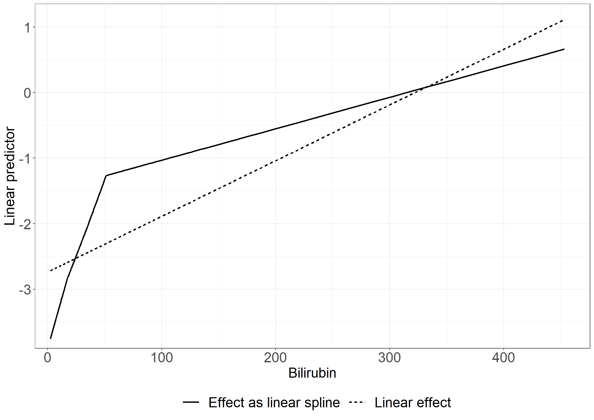
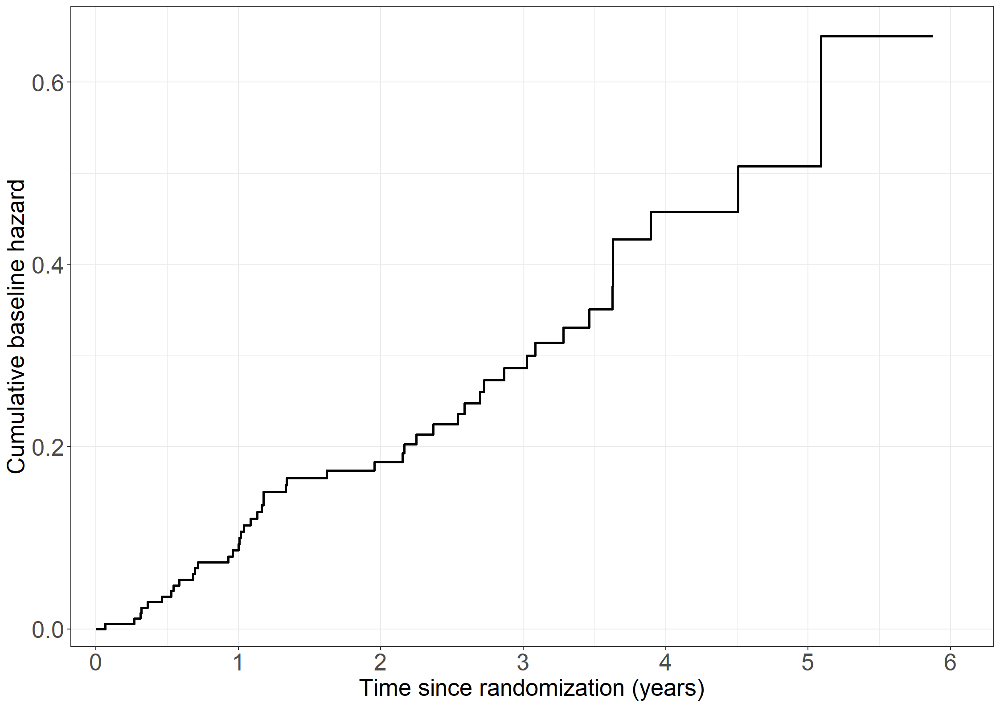
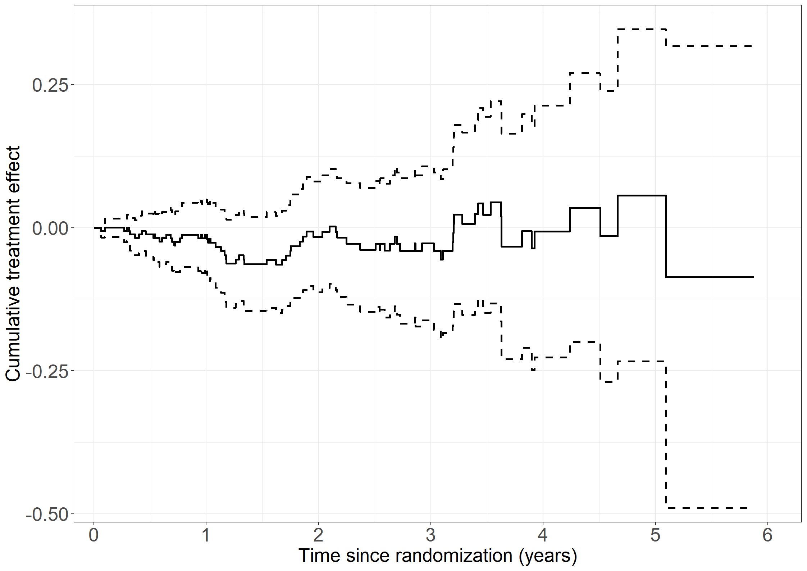
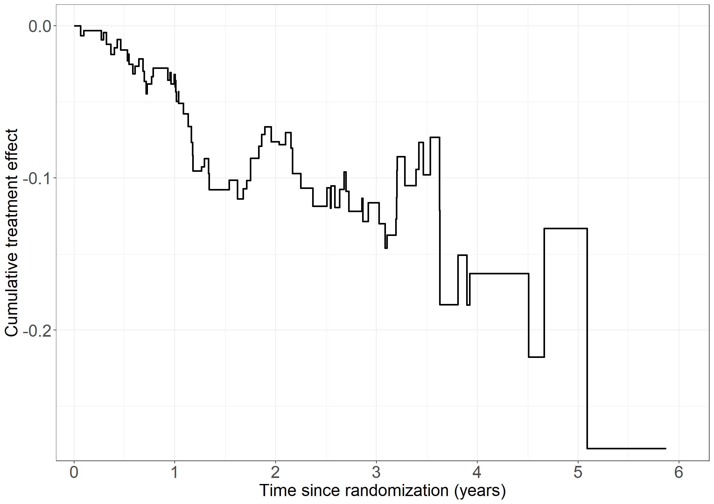
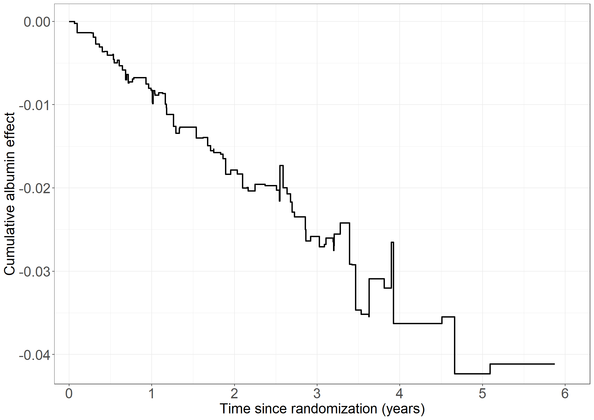

# Read data
pbc3 <- data.frame(read.csv("data/pbc3.csv"))
pbc3$fail <- ifelse(pbc3$status != 0, 1, 0) # event/failure indicator
pbc3$tment_char <- ifelse(pbc3$tment == 0, "Placebo", "CyA")
#------------------------------------------------------------------#
# General plotting style
#------------------------------------------------------------------#
library(ggplot2)
theme_general <- theme_bw() +
theme(text = element_text(size = 20),
axis.text.x = element_text(size = 20),
axis.text.y = element_text(size = 20),
legend.position = "bottom",
legend.title=element_blank(),
legend.text = element_text(size = 20),
legend.key.size = unit(2,"line")
)
#------------------------------------------------------------------#
# Figure 2.1
#------------------------------------------------------------------#
# Nelson Aalen estimate by treatment
library(survival)
nafit <- survfit(Surv(days, status != 0) ~ tment, data = pbc3)
# Collect data for plot
nadata <- data.frame(cumhaz = nafit$cumhaz, time = nafit$time,
tment = c(rep(names(nafit$strata)[1], nafit$strata[1]),
rep(names(nafit$strata)[2], nafit$strata[2])))
# Create Figure 2.1
library(ggplot2)
fig2.1 <- ggplot(aes(x = time / 365.25, y = cumhaz, linetype = tment), data = nadata) +
geom_step(size = 1) +
scale_linetype_discrete("Treatment", labels = c("Placebo", "CyA")) +
xlab("Time since randomization (years)") +
ylab("Cumulative hazard") +
scale_x_continuous(expand = expansion(mult = c(0.001, 0.05)),
limits = c(0, 6), breaks = seq(0, 6, 1)) +
scale_y_continuous(expand = expansion(mult = c(0.005, 0.05))) +
theme_general
fig2.1
#------------------------------------------------------------------#
# In-text: Nelson-Aalen estimates at 2 years
#------------------------------------------------------------------#
tail(subset(nadata, nadata$time <= 2*365.25 & nadata$tment == "tment=0"),1) cumhaz time tment
60 0.183065 724 tment=0tail(subset(nadata, nadata$time <= 2*365.25 & nadata$tment == "tment=1"),1) cumhaz time tment
209 0.1668539 725 tment=1#------------------------------------------------------------------#
# Table 2.1
#------------------------------------------------------------------#
# Data for Table 2.1
cuts <- c(0, 2, 4) * 365.25
# Make the data ready using survSplit from survival package
library(survival)
pbc3mult <- as.data.frame(survSplit(Surv(days, fail) ~ ., pbc3,
cut = cuts[-1],
episode = "timegroup"))
pbc3mult$risktime <- pbc3mult$days - cuts[pbc3mult$timegroup]
pbc3mult$timegroup <- as.factor(pbc3mult$timegroup)
library(dplyr)
pcwdata <- pbc3mult %>%
group_by(tment, timegroup) %>%
summarise(fail = sum(fail), risktime = sum(days - cuts[timegroup]))
pcwdata$risktimeyrs <- pcwdata$risktime/365.25
pcwdata$hazard <- 36525*pcwdata$fail/pcwdata$risktime
pcwdata$SD <- 36525*sqrt(pcwdata$fail)/pcwdata$risktime
data.frame(pcwdata) tment timegroup fail risktime risktimeyrs hazard SD
1 0 1 27 104856.0 287.08008 9.405041 1.810001
2 0 2 17 49673.0 135.99726 12.500252 3.031756
3 0 3 2 8642.0 23.66051 8.452904 5.977106
4 1 1 24 107931.5 295.50034 8.121818 1.657859
5 1 2 18 50284.5 137.67146 13.074605 3.081714
6 1 3 2 7599.0 20.80493 9.613107 6.797493#------------------------------------------------------------------#
# Figure 2.2
#------------------------------------------------------------------#
# Rates + cuts from Table 2.1
rateCyA <- c(8.1,13.1,9.6)
ratePbo <- c(9.4,12.5,8.5)
pcwtime <- c(0,2,4,5)
# Collect data
plotdata <- data.frame(rates = c(rateCyA, ratePbo),
tment = c(rep("CyA", length(rateCyA)),
rep("Placebo", length(ratePbo))),
times_s = rep(pcwtime[-4], 2),
times = rep(pcwtime[-1], 2))
# Create Figure 2.2
fig2.2 <- ggplot(aes(x = time, y = rates, linetype = tment), data = plotdata) +
geom_segment(aes(x = times_s, y = rates, xend = times, yend = rates), size = 1) +
scale_linetype_discrete("Treatment", labels = c("Placebo", "CyA")) +
xlab("Time since randomization (years)") +
ylab("Estimated hazard function (per 100 years)") +
scale_x_continuous(expand = expansion(mult = c(0.001, 0.05)),
limits = c(0, 5),
breaks = seq(0, 5, 1)) +
scale_y_continuous(expand = expansion(mult = c(0.005, 0.05)),
limits = c(0,14), breaks = seq(0, 14, 2)) +
theme_general
fig2.2
#------------------------------------------------------------------#
# In-text: LRT test using piece-wise exponential model
#------------------------------------------------------------------#
library(stats)
poisfull <- glm(fail ~ - 1 + tment + timegroup + tment:timegroup +
offset(log(risktime/36525)), data = pbc3mult, family = poisson)
poisred <- glm(fail ~ - 1 + timegroup +
offset(log(risktime/36525)), data = pbc3mult, family = poisson)
anova(poisred,poisfull,test="LRT")Analysis of Deviance Table
Model 1: fail ~ -1 + timegroup + offset(log(risktime/36525))
Model 2: fail ~ -1 + tment + timegroup + tment:timegroup + offset(log(risktime/36525))
Resid. Df Resid. Dev Df Deviance Pr(>Chi)
1 620 459.66
2 617 459.35 3 0.30813 0.9585# or
library(lmtest)
lrtest(poisred,poisfull)Likelihood ratio test
Model 1: fail ~ -1 + timegroup + offset(log(risktime/36525))
Model 2: fail ~ -1 + tment + timegroup + tment:timegroup + offset(log(risktime/36525))
#Df LogLik Df Chisq Pr(>Chisq)
1 3 -319.83
2 6 -319.68 3 0.3081 0.9585#------------------------------------------------------------------#
# In-text: Logrank test and p-value
#------------------------------------------------------------------#
library(survival)
lr<-survdiff(Surv(days, status != 0) ~ tment, data = pbc3)
c(lr$chisq,lr$pvalue)[1] 0.07708002 0.78129419#------------------------------------------------------------------#
# Figure 2.3
#------------------------------------------------------------------#
# NA data from figure 2.1 model fit
tment1 <- subset(nadata, tment == "tment=1")
# Estimated hazard per time group
pcwdata$hazard_timegroup <- pcwdata$fail / pcwdata$risktime
# Add a numeric version of the treatment to the NA estimates
nadata$tmentnum <- ifelse(nadata$tment == "tment=1", 1, 0)
# Add piecewise constant hazard to data
nadata$pwch <- NULL
# Between time 0 and 2
nadata$pwch[nadata$time <= 2 * 365.25] <- nadata$time[nadata$time <= 2 * 365.25] *
(pcwdata$hazard_timegroup[1] * (1-nadata$tmentnum[nadata$time <= 2 * 365.25]) +
pcwdata$hazard_timegroup[4] * (nadata$tmentnum[nadata$time <= 2 * 365.25]))
# Between time 2 and 4
nadata$pwch[nadata$time > 2 * 365.25 & nadata$time <= 4* 365.25 ] <- 2 * 365.25 *
(pcwdata$hazard_timegroup[1] * (1-nadata$tmentnum[nadata$time > 2 * 365.25 & nadata$time <= 4 * 365.25]) +
pcwdata$hazard_timegroup[4] * (nadata$tmentnum[nadata$time > 2 * 365.25 & nadata$time <= 4 * 365.25])) +
(nadata$time[nadata$time > 2 * 365.25 & nadata$time <= 4 * 365.25] - 2 * 365.25) *
(pcwdata$hazard_timegroup[2] * (1-nadata$tmentnum[nadata$time > 2 * 365.25 & nadata$time <= 4 * 365.25]) +
pcwdata$hazard_timegroup[5] * (nadata$tmentnum[nadata$time > 2 * 365.25 & nadata$time <= 4 * 365.25]))
# After time 4
nadata$pwch[nadata$time > 4 * 365.25] <- 2 * 365.25 *
(pcwdata$hazard_timegroup[1] * (1-nadata$tmentnum[nadata$time > 4 * 365.25]) +
pcwdata$hazard_timegroup[4] * (nadata$tmentnum[nadata$time > 4 * 365.25])) +
2 * 365.25 *
(pcwdata$hazard_timegroup[2] * (1-nadata$tmentnum[nadata$time > 4 * 365.25]) +
pcwdata$hazard_timegroup[5] * (nadata$tmentnum[nadata$time > 4 * 365.25])) +
(nadata$time[nadata$time > 4 * 365.25] - 4 * 365.25) *
(pcwdata$hazard_timegroup[3] * (1-nadata$tmentnum[nadata$time > 4 * 365.25]) +
pcwdata$hazard_timegroup[6] * (nadata$tmentnum[nadata$time > 4 * 365.25]))
# Reformat for plot
piecepdata <- data.frame(cumhaz = c(nadata$cumhaz, nadata$pwch),
time = rep(nadata$time, 2),
tmentnum = rep(nadata$tmentnum, 2),
type = c(rep("Nelson-Aalen", length(nadata$time)),
rep("Piece-wise exponential", length(nadata$time))))
# Only for treatment 1
piecepdata1 <- subset(piecepdata, tmentnum == 1)
# Create Figure 2.3
fig2.3 <- ggplot(aes(x = time / 365.25, y = cumhaz, linetype = type),
data = subset(piecepdata1, type == "Nelson-Aalen")) +
geom_step(size = 1) +
geom_line(aes(x = time / 365.25, y = cumhaz, linetype = type), size = 1,
data = subset(piecepdata1, type == "Piece-wise exponential")) +
labs(linetype = "Type") +
xlab("Time since randomization (years)") +
ylab("Cumulative hazard") +
scale_x_continuous(expand = expansion(mult = c(0.001, 0.05)),
limits = c(0, 6),
breaks = seq(0, 6, 1)) +
scale_y_continuous(expand = expansion(mult = c(0.005, 0.05))) +
theme_general+
theme(legend.title=element_blank(),
legend.text = element_text(size = 20),
legend.key.size = unit(2,"line"))
fig2.3
#------------------------------------------------------------------#
# In-text: Cox model
#------------------------------------------------------------------#
# Fit a Cox model using the pbc3 data with treatment as a covariate
library(survival)
coxfit <- coxph(Surv(days, status != 0) ~ tment, data = pbc3, method = "breslow")
summary(coxfit)Call:
coxph(formula = Surv(days, status != 0) ~ tment, data = pbc3,
method = "breslow")
n= 349, number of events= 90
coef exp(coef) se(coef) z Pr(>|z|)
tment -0.05854 0.94314 0.21092 -0.278 0.781
exp(coef) exp(-coef) lower .95 upper .95
tment 0.9431 1.06 0.6238 1.426
Concordance= 0.517 (se = 0.029 )
Likelihood ratio test= 0.08 on 1 df, p=0.8
Wald test = 0.08 on 1 df, p=0.8
Score (logrank) test = 0.08 on 1 df, p=0.8#------------------------------------------------------------------#
# Figure 2.5
#------------------------------------------------------------------#
# Extract cumulative baseline hazard
coxcumhaz <- basehaz(coxfit, centered = FALSE)
# Collect data for plot (Breslow estimate)
coxdata <- data.frame(cumhaz = coxcumhaz$hazard,
time = coxcumhaz$time,
tment = rep("0", nrow(coxcumhaz)),
type = rep("Breslow estimate", nrow(coxcumhaz)))
# Create Figure 2.5
fig2.5 <- ggplot(aes(x = time / 365.25, y = cumhaz, linetype = tment), data = coxdata) +
geom_step(size = 1) +
xlab("Time since randomization (years)") +
ylab("Cumulative baseline hazard") +
scale_linetype_discrete("Treatment", labels = c("Placebo")) +
scale_x_continuous(expand = expansion(mult = c(0.001, 0.05)),
limits = c(0, 6),
breaks = seq(0, 6, 1)) +
scale_y_continuous(expand = expansion(mult = c(0.005, 0.05))) +
theme_general+theme(legend.position = "none")
fig2.5
#------------------------------------------------------------------#
# Table 2.3
#------------------------------------------------------------------#
# Average covariate values of albumin and bilirubin per treatment
library(dplyr)
tabledata <- pbc3 %>%
group_by(tment, tment_char) %>%
summarise(n = sum(id != 0),
average_albumin = mean(alb, na.rm = TRUE), # NOTE: Removes missing observations from mean computation
average_bilirubin = mean(bili, na.rm = TRUE),
)
data.frame(tabledata) tment tment_char n average_albumin average_bilirubin
1 0 Placebo 173 39.26101 42.33674
2 1 CyA 176 37.50731 48.55540#------------------------------------------------------------------#
# Table 2.4
#------------------------------------------------------------------#
# Cox model with treatment, albumin and bilirubin as covariates
library(survival)
coxfit <- coxph(Surv(days, status != 0) ~ tment + alb + bili,
data = pbc3)
summary(coxfit)Call:
coxph(formula = Surv(days, status != 0) ~ tment + alb + bili,
data = pbc3)
n= 343, number of events= 88
(6 observations deleted due to missingness)
coef exp(coef) se(coef) z Pr(>|z|)
tment -0.4965639 0.6086184 0.2256162 -2.201 0.0277 *
alb -0.1156596 0.8907784 0.0212810 -5.435 5.48e-08 ***
bili 0.0089494 1.0089895 0.0009801 9.131 < 2e-16 ***
---
Signif. codes: 0 '***' 0.001 '**' 0.01 '*' 0.05 '.' 0.1 ' ' 1
exp(coef) exp(-coef) lower .95 upper .95
tment 0.6086 1.6431 0.3911 0.9471
alb 0.8908 1.1226 0.8544 0.9287
bili 1.0090 0.9911 1.0071 1.0109
Concordance= 0.806 (se = 0.021 )
Likelihood ratio test= 99.06 on 3 df, p=<2e-16
Wald test = 121 on 3 df, p=<2e-16
Score (logrank) test = 172.3 on 3 df, p=<2e-16#------------------------------------------------------------------#
# In-text: Poisson model with treatment
#------------------------------------------------------------------#
library(stats)
library(broom) # For using tidy() function
poism <- glm(fail ~ tment + timegroup-1 +
offset(log(risktime/365.25)), data = pbc3mult,family = poisson)
tidy(poism, exponentiate = T, conf.int = T)# A tibble: 4 × 7
term estimate std.error statistic p.value conf.low conf.high
<chr> <dbl> <dbl> <dbl> <dbl> <dbl> <dbl>
1 tment 0.942 0.211 -0.284 7.76e- 1 0.622 1.43
2 timegroup1 0.0902 0.174 -13.8 2.51e-43 0.0631 0.125
3 timegroup2 0.132 0.198 -10.2 1.29e-24 0.0876 0.191
4 timegroup3 0.0925 0.509 -4.68 2.91e- 6 0.0283 0.220#------------------------------------------------------------------#
# Table 2.5
#------------------------------------------------------------------#
# Poisson model with treatment, albumin and bilirubin as covariates
poismod_t25 <- glm(fail ~ tment + alb + bili+ timegroup-1 +
offset(log(risktime/365.25)), data = pbc3mult, family = poisson)
tidy(poismod_t25)# A tibble: 6 × 5
term estimate std.error statistic p.value
<chr> <dbl> <dbl> <dbl> <dbl>
1 tment -0.475 0.224 -2.12 3.39e- 2
2 alb -0.112 0.0213 -5.28 1.30e- 7
3 bili 0.00846 0.000939 9.01 2.12e-19
4 timegroup1 1.29 0.806 1.60 1.10e- 1
5 timegroup2 2.15 0.833 2.58 9.99e- 3
6 timegroup3 1.61 1.01 1.59 1.12e- 1#------------------------------------------------------------------#
# Table 2.6
#------------------------------------------------------------------#
# Add transformations of covariates
pbc3$albnorm <- with(pbc3, (alb-35)*(alb>35))
pbc3$bilihigh <- with(pbc3, (bili-17.1)*(bili>17.1))
pbc3$bilitoohigh <- with(pbc3, (bili-34.2)*(bili>34.2))
pbc3$bilimuchtoohigh <- with(pbc3, (bili-51.3)*(bili>51.3))
pbc3$log2bili <- with(pbc3, log2(bili))
pbc3$log2bili2 <- with(pbc3, log2bili*log2bili)
pbc3$logbilihigh <- with(pbc3, (log2bili-log2(17.1))*(bili>17.1))
pbc3$logbilitoohigh <- with(pbc3, (log2bili-log2(34.2))*(bili>34.2))
pbc3$logbilimuchtoohigh <- with(pbc3, (log2bili-log2(51.3))*(bili>51.3))
#------------------------------------------------------------------#
# Table 2.6 Cox models
#------------------------------------------------------------------#
# Models for LR tests
library(lmtest)
base_coxmod <- coxph(Surv(days, status != 0) ~ tment + alb + bili,
eps = 1e-8, method = "breslow", data = pbc3)
base_coxmod_log <- coxph(Surv(days, status != 0) ~ tment + alb + log2bili,
eps = 1e-8, method = "breslow", data = pbc3)
# Splines Cox 1
coxmod_t26_l1 <- coxph(Surv(days, status != 0) ~ tment + alb + albnorm + bili,
eps = 1e-8, method = "breslow", data = pbc3)
tidy(coxmod_t26_l1)# A tibble: 4 × 5
term estimate std.error statistic p.value
<chr> <dbl> <dbl> <dbl> <dbl>
1 tment -0.475 0.226 -2.10 3.57e- 2
2 alb -0.0854 0.0453 -1.89 5.94e- 2
3 albnorm -0.0557 0.0726 -0.767 4.43e- 1
4 bili 0.00898 0.000984 9.12 7.24e-20lrtest(coxmod_t26_l1, base_coxmod)Likelihood ratio test
Model 1: Surv(days, status != 0) ~ tment + alb + albnorm + bili
Model 2: Surv(days, status != 0) ~ tment + alb + bili
#Df LogLik Df Chisq Pr(>Chisq)
1 4 -413.12
2 3 -413.42 -1 0.6001 0.4386# Quadratic Cox 1
coxmod_t26_q1 <- coxph(Surv(days, status != 0) ~ tment + alb + I(alb*alb) + bili ,
eps = 1e-8, method = "breslow", data = pbc3)
tidy(coxmod_t26_q1)# A tibble: 4 × 5
term estimate std.error statistic p.value
<chr> <dbl> <dbl> <dbl> <dbl>
1 tment -0.498 0.227 -2.19 2.84e- 2
2 alb -0.130 0.213 -0.608 5.43e- 1
3 I(alb * alb) 0.000194 0.00298 0.0653 9.48e- 1
4 bili 0.00895 0.000980 9.13 6.74e-20lrtest(coxmod_t26_q1, base_coxmod)Likelihood ratio test
Model 1: Surv(days, status != 0) ~ tment + alb + I(alb * alb) + bili
Model 2: Surv(days, status != 0) ~ tment + alb + bili
#Df LogLik Df Chisq Pr(>Chisq)
1 4 -413.41
2 3 -413.42 -1 0.0042 0.948# Splines Cox 2
coxmod_t26_l2 <- coxph(Surv(days, status != 0) ~ tment + alb +
bili + bilihigh + bilitoohigh + bilimuchtoohigh,
eps = 1e-8, method = "breslow", data = pbc3)
tidy(coxmod_t26_l2)# A tibble: 6 × 5
term estimate std.error statistic p.value
<chr> <dbl> <dbl> <dbl> <dbl>
1 tment -0.598 0.230 -2.61 0.00915
2 alb -0.0910 0.0219 -4.15 0.0000325
3 bili 0.0624 0.0623 1.00 0.316
4 bilihigh -0.0146 0.0853 -0.171 0.864
5 bilitoohigh -0.00258 0.0530 -0.0488 0.961
6 bilimuchtoohigh -0.0400 0.0265 -1.51 0.131 lrtest(coxmod_t26_l2, base_coxmod)Likelihood ratio test
Model 1: Surv(days, status != 0) ~ tment + alb + bili + bilihigh + bilitoohigh +
bilimuchtoohigh
Model 2: Surv(days, status != 0) ~ tment + alb + bili
#Df LogLik Df Chisq Pr(>Chisq)
1 6 -401.22
2 3 -413.42 -3 24.396 2.064e-05 ***
---
Signif. codes: 0 '***' 0.001 '**' 0.01 '*' 0.05 '.' 0.1 ' ' 1# Quadratic Cox 2
coxmod_t26_q2 <- coxph(Surv(days, status != 0) ~ tment + alb + bili + I(bili*bili),
eps = 1e-8, method = "breslow", data = pbc3)
tidy(coxmod_t26_q2)# A tibble: 4 × 5
term estimate std.error statistic p.value
<chr> <dbl> <dbl> <dbl> <dbl>
1 tment -0.521 0.223 -2.33 1.96e- 2
2 alb -0.102 0.0217 -4.70 2.56e- 6
3 bili 0.0200 0.00326 6.12 9.21e-10
4 I(bili * bili) -0.0000305 0.00000910 -3.35 7.98e- 4lrtest(coxmod_t26_q2, base_coxmod)Likelihood ratio test
Model 1: Surv(days, status != 0) ~ tment + alb + bili + I(bili * bili)
Model 2: Surv(days, status != 0) ~ tment + alb + bili
#Df LogLik Df Chisq Pr(>Chisq)
1 4 -407.24
2 3 -413.42 -1 12.351 0.0004408 ***
---
Signif. codes: 0 '***' 0.001 '**' 0.01 '*' 0.05 '.' 0.1 ' ' 1# Splines Cox 3
coxmod_t26_l3 <- coxph(Surv(days, status != 0) ~ tment + alb +
log2bili + logbilihigh + logbilitoohigh + logbilimuchtoohigh,
eps = 1e-8, method = "breslow", data = pbc3)
tidy(coxmod_t26_l3)# A tibble: 6 × 5
term estimate std.error statistic p.value
<chr> <dbl> <dbl> <dbl> <dbl>
1 tment -0.580 0.230 -2.53 0.0115
2 alb -0.0885 0.0218 -4.06 0.0000499
3 log2bili 0.201 0.465 0.433 0.665
4 logbilihigh 0.936 0.915 1.02 0.307
5 logbilitoohigh -0.386 1.29 -0.299 0.765
6 logbilimuchtoohigh -0.181 0.988 -0.184 0.854 lrtest(coxmod_t26_l3, base_coxmod_log)Likelihood ratio test
Model 1: Surv(days, status != 0) ~ tment + alb + log2bili + logbilihigh +
logbilitoohigh + logbilimuchtoohigh
Model 2: Surv(days, status != 0) ~ tment + alb + log2bili
#Df LogLik Df Chisq Pr(>Chisq)
1 6 -402.13
2 3 -402.94 -3 1.6144 0.6561# Quadratic Cox 3
coxmod_t26_q3 <- coxph(Surv(days, status != 0) ~ tment + alb + log2bili + log2bili2,
eps = 1e-8, method = "breslow", data = pbc3)
tidy(coxmod_t26_q3)# A tibble: 4 × 5
term estimate std.error statistic p.value
<chr> <dbl> <dbl> <dbl> <dbl>
1 tment -0.574 0.225 -2.56 0.0106
2 alb -0.0915 0.0219 -4.17 0.0000298
3 log2bili 0.582 0.500 1.16 0.244
4 log2bili2 0.00715 0.0428 0.167 0.867 lrtest(coxmod_t26_q3, base_coxmod_log)Likelihood ratio test
Model 1: Surv(days, status != 0) ~ tment + alb + log2bili + log2bili2
Model 2: Surv(days, status != 0) ~ tment + alb + log2bili
#Df LogLik Df Chisq Pr(>Chisq)
1 4 -402.93
2 3 -402.94 -1 0.0277 0.8677#------------------------------------------------------------------#
# Table 2.6 Poisson models
#------------------------------------------------------------------#
# Make the data ready for Poisson models using survSplit from survival package
library(survival)
pbc3mult <- as.data.frame(survSplit(Surv(days, fail) ~ ., pbc3,
cut = cuts[-1],
episode = "timegroup"))
pbc3mult$risktime <- pbc3mult$days - cuts[pbc3mult$timegroup]
pbc3mult$timegroup <- as.factor(pbc3mult$timegroup)
# Models for LR test
base_poismod <- glm(fail ~ timegroup + tment + alb + bili +
offset(log(risktime)), data = pbc3mult, family = poisson)
base_poismod_log <- glm(fail ~ timegroup + tment + alb + log2bili +
offset(log(risktime)), data = pbc3mult, family = poisson)
# Splines Poisson 1
poismod_t26_l1 <- glm(fail ~ timegroup + tment + alb + albnorm + bili +
offset(log(risktime)), data = pbc3mult, family = poisson)
tidy(poismod_t26_l1)# A tibble: 7 × 5
term estimate std.error statistic p.value
<chr> <dbl> <dbl> <dbl> <dbl>
1 (Intercept) -5.12 1.63 -3.14 1.66e- 3
2 timegroup1 -0.311 0.604 -0.514 6.07e- 1
3 timegroup2 0.543 0.602 0.902 3.67e- 1
4 tment -0.458 0.225 -2.04 4.17e- 2
5 alb -0.0864 0.0452 -1.91 5.57e- 2
6 albnorm -0.0474 0.0720 -0.658 5.11e- 1
7 bili 0.00848 0.000942 9.00 2.24e-19lrtest(poismod_t26_l1, base_poismod)Likelihood ratio test
Model 1: fail ~ timegroup + tment + alb + albnorm + bili + offset(log(risktime))
Model 2: fail ~ timegroup + tment + alb + bili + offset(log(risktime))
#Df LogLik Df Chisq Pr(>Chisq)
1 7 -263.14
2 6 -263.36 -1 0.4404 0.5069# Quadratic Poisson 1
poismod_t26_q1 <- glm(fail ~ timegroup + tment + alb + I(alb*alb) + bili +
offset(log(risktime)), data = pbc3mult, family = poisson)
tidy(poismod_t26_q1)# A tibble: 7 × 5
term estimate std.error statistic p.value
<chr> <dbl> <dbl> <dbl> <dbl>
1 (Intercept) -3.83 3.81 -1.00 3.16e- 1
2 timegroup1 -0.323 0.605 -0.534 5.94e- 1
3 timegroup2 0.536 0.602 0.890 3.73e- 1
4 tment -0.479 0.226 -2.12 3.41e- 2
5 alb -0.139 0.210 -0.660 5.09e- 1
6 I(alb * alb) 0.000371 0.00293 0.126 8.99e- 1
7 bili 0.00846 0.000939 9.01 2.05e-19lrtest(poismod_t26_q1, base_poismod)Likelihood ratio test
Model 1: fail ~ timegroup + tment + alb + I(alb * alb) + bili + offset(log(risktime))
Model 2: fail ~ timegroup + tment + alb + bili + offset(log(risktime))
#Df LogLik Df Chisq Pr(>Chisq)
1 7 -263.36
2 6 -263.36 -1 0.0158 0.8999# Splines Poisson 2
poismod_t26_l2 <- glm(fail ~ timegroup + tment + alb +
bili + bilihigh + bilitoohigh + bilimuchtoohigh +
offset(log(risktime)), data = pbc3mult, family = poisson)
tidy(poismod_t26_l2)# A tibble: 9 × 5
term estimate std.error statistic p.value
<chr> <dbl> <dbl> <dbl> <dbl>
1 (Intercept) -6.45 1.37 -4.72 0.00000240
2 timegroup1 -0.427 0.605 -0.707 0.480
3 timegroup2 0.425 0.604 0.705 0.481
4 tment -0.569 0.227 -2.51 0.0121
5 alb -0.0865 0.0219 -3.95 0.0000770
6 bili 0.0617 0.0623 0.989 0.322
7 bilihigh -0.0168 0.0852 -0.197 0.844
8 bilitoohigh 0.00265 0.0526 0.0504 0.960
9 bilimuchtoohigh -0.0428 0.0262 -1.63 0.102 lrtest(poismod_t26_l2, base_poismod)Likelihood ratio test
Model 1: fail ~ timegroup + tment + alb + bili + bilihigh + bilitoohigh +
bilimuchtoohigh + offset(log(risktime))
Model 2: fail ~ timegroup + tment + alb + bili + offset(log(risktime))
#Df LogLik Df Chisq Pr(>Chisq)
1 9 -251.09
2 6 -263.36 -3 24.545 1.922e-05 ***
---
Signif. codes: 0 '***' 0.001 '**' 0.01 '*' 0.05 '.' 0.1 ' ' 1# Quadratic Poisson 2
poismod_t26_q2 <- glm(fail ~ timegroup + tment + alb + bili + I(bili*bili) +
offset(log(risktime)), data = pbc3mult, family = poisson)
tidy(poismod_t26_q2)# A tibble: 7 × 5
term estimate std.error statistic p.value
<chr> <dbl> <dbl> <dbl> <dbl>
1 (Intercept) -5.16 1.05 -4.90 9.47e- 7
2 timegroup1 -0.382 0.605 -0.631 5.28e- 1
3 timegroup2 0.455 0.603 0.755 4.50e- 1
4 tment -0.499 0.222 -2.25 2.45e- 2
5 alb -0.0977 0.0216 -4.52 6.24e- 6
6 bili 0.0200 0.00327 6.12 9.49e-10
7 I(bili * bili) -0.0000315 0.00000907 -3.48 5.10e- 4lrtest(poismod_t26_q2, base_poismod)Likelihood ratio test
Model 1: fail ~ timegroup + tment + alb + bili + I(bili * bili) + offset(log(risktime))
Model 2: fail ~ timegroup + tment + alb + bili + offset(log(risktime))
#Df LogLik Df Chisq Pr(>Chisq)
1 7 -256.69
2 6 -263.36 -1 13.345 0.0002591 ***
---
Signif. codes: 0 '***' 0.001 '**' 0.01 '*' 0.05 '.' 0.1 ' ' 1# Splines Poisson 3
poismod_t26_l3 <- glm(fail ~ timegroup + tment + alb +
log2bili + logbilihigh + logbilitoohigh + logbilimuchtoohigh +
offset(log(risktime)), data = pbc3mult, family = poisson)
tidy(poismod_t26_l3)# A tibble: 9 × 5
term estimate std.error statistic p.value
<chr> <dbl> <dbl> <dbl> <dbl>
1 (Intercept) -6.52 2.00 -3.27 0.00109
2 timegroup1 -0.407 0.604 -0.674 0.501
3 timegroup2 0.418 0.604 0.693 0.488
4 tment -0.556 0.227 -2.45 0.0144
5 alb -0.0844 0.0218 -3.87 0.000109
6 log2bili 0.198 0.465 0.425 0.671
7 logbilihigh 0.882 0.912 0.967 0.334
8 logbilitoohigh -0.234 1.28 -0.183 0.855
9 logbilimuchtoohigh -0.314 0.971 -0.323 0.746 lrtest(poismod_t26_l3, base_poismod_log)Likelihood ratio test
Model 1: fail ~ timegroup + tment + alb + log2bili + logbilihigh + logbilitoohigh +
logbilimuchtoohigh + offset(log(risktime))
Model 2: fail ~ timegroup + tment + alb + log2bili + offset(log(risktime))
#Df LogLik Df Chisq Pr(>Chisq)
1 9 -251.77
2 6 -252.62 -3 1.7135 0.6339# Quadratic Poisson 3
poismod_t26_q3 <- glm(fail ~ timegroup + tment + alb + log2bili + log2bili2 +
offset(log(risktime)), data = pbc3mult, family = poisson)
tidy(poismod_t26_q3)# A tibble: 7 × 5
term estimate std.error statistic p.value
<chr> <dbl> <dbl> <dbl> <dbl>
1 (Intercept) -7.86 1.85 -4.25 0.0000218
2 timegroup1 -0.406 0.605 -0.672 0.502
3 timegroup2 0.439 0.603 0.728 0.467
4 tment -0.545 0.223 -2.45 0.0143
5 alb -0.0871 0.0219 -3.98 0.0000692
6 log2bili 0.628 0.497 1.26 0.207
7 log2bili2 0.00164 0.0424 0.0387 0.969 lrtest(poismod_t26_q3, base_poismod_log)Likelihood ratio test
Model 1: fail ~ timegroup + tment + alb + log2bili + log2bili2 + offset(log(risktime))
Model 2: fail ~ timegroup + tment + alb + log2bili + offset(log(risktime))
#Df LogLik Df Chisq Pr(>Chisq)
1 7 -252.62
2 6 -252.62 -1 0.0015 0.9691#------------------------------------------------------------------#
# Figure 2.6
#------------------------------------------------------------------#
# The below linear predictors include estimates from the following models
pbc3mult$timegroup <- relevel(as.factor(pbc3mult$timegroup), ref = "3")
pbc3mult$tment_char <- as.factor(pbc3mult$tment_char)
pbc3mult$tment_char <- relevel(pbc3mult$tment_char, ref = "Placebo")
base_poismod <- glm(fail ~ offset(log(risktime)) + as.factor(timegroup) + tment_char + alb + bili,
data = pbc3mult, family = poisson)
poismod_t26_l1 <- glm(fail ~ offset(log(risktime)) + as.factor(timegroup) + tment_char + alb + bili + albnorm,
data = pbc3mult, family = poisson)
poismod_t26_l3 <- glm(fail ~ offset(log(risktime)) + as.factor(timegroup) + tment_char + alb +
bili + bilihigh + bilitoohigh + bilimuchtoohigh,
data = pbc3mult,family = poisson)
# Make a dataset with linear predictor information
lin2 <- pbc3
lin2$lp1 <- with(pbc3, 1.6076-0.1123*alb)
lin2$lp2 <- with(pbc3, 0.7828-0.0864*alb-0.0474*albnorm)
lin2$lp3 <- with(pbc3, 1.6076+0.0085*bili-38.7*0.1123)
lin2$lp4 <- with(pbc3, -0.5534+0.0617*bili-0.0168*bilihigh+0.0027*bilitoohigh-0.0428*bilimuchtoohigh-0.0865*38.7)
lin2row <- data.frame(effect = c(rep("Linear effect", nrow(lin2)),
rep("Effect as linear spline", nrow(lin2))),
lp = c(lin2$lp1, lin2$lp2), alb = c(lin2$alb, lin2$alb))
library(ggplot2)
fig2.6 <- ggplot(aes(x = alb, y = lp, linetype = effect), data = lin2row) +
geom_line(size = 1) +
xlab("Albumin") +
ylab("Linear predictor") +
scale_linetype_discrete("Effect") +
scale_x_continuous(expand = expansion(mult = c(0.03, 0.05))) +
scale_y_continuous(expand = expansion(mult = c(0.03, 0.05))) +
theme_general
fig2.6
#------------------------------------------------------------------#
# Figure 2.7
#------------------------------------------------------------------#
# bilirubin and the two last linear predictors
lin2row2 <- data.frame(effect = c(rep("Linear effect", nrow(lin2)),
rep("Effect as linear spline", nrow(lin2))),
lp = c(lin2$lp3, lin2$lp4),
bili = c(lin2$bili, lin2$bili))
fig2.7 <- ggplot(aes(x = bili, y = lp, linetype = effect), data = lin2row2) +
geom_line(size = 1) +
xlab("Bilirubin") +
ylab("Linear predictor") +
scale_linetype_discrete("Effect") +
scale_x_continuous(expand = expansion(mult = c(0.03, 0.05))) +
scale_y_continuous(expand = expansion(mult = c(0.03, 0.05))) +
theme_general
fig2.7
#------------------------------------------------------------------#
# Figure 2.8
#------------------------------------------------------------------#
# The below linear predictors include estimates from the following models
base_poismod2_log <- glm(fail ~ offset(log(risktime)) + as.factor(timegroup) + tment_char + alb + log2bili,
data = pbc3mult, family = poisson)
poismod_t26_l3 <- glm(fail ~ offset(log(risktime)) + as.factor(timegroup) + tment_char + alb +
log2bili + logbilihigh + logbilitoohigh + logbilimuchtoohigh,
data = pbc3mult, family = poisson)
# Make a dataset with linear predictor information
log2 <- pbc3
log2$lp3 <- with(pbc3, -2.0162+0.6469*log2bili-38.7*0.087)
log2$lp4 <- with(pbc3, -0.6194+0.198*log2bili+0.8815*logbilihigh-0.2336*logbilitoohigh
-0.3139*logbilimuchtoohigh-0.0844*38.7)
log2row <- data.frame(effect = c(rep("Linear effect", nrow(log2)),
rep("Effect as linear spline", nrow(log2))),
lp = c(log2$lp3, log2$lp4),log2bili = c(log2$log2bili, log2$log2bili))
fig2.8 <- ggplot(aes(x = log2bili, y = lp, linetype = effect), data = log2row) +
geom_line(size = 1) +
xlab(expression(log[2] * "(bilirubin)")) +
ylab("Linear predictor") +
scale_linetype_discrete("Effect") +
scale_x_continuous(expand = expansion(mult = c(0.03, 0.05))) +
scale_y_continuous(expand = expansion(mult = c(0.03, 0.05))) +
theme_general
fig2.8
#------------------------------------------------------------------#
# Table 2.7
#------------------------------------------------------------------#
# Cox model
coxmod_t27 <- coxph(Surv(days, status != 0) ~ tment + alb + log2bili,
eps = 1e-8, method = "breslow", data = pbc3)
tidy(coxmod_t27)# A tibble: 3 × 5
term estimate std.error statistic p.value
<chr> <dbl> <dbl> <dbl> <dbl>
1 tment -0.574 0.224 -2.56 1.05e- 2
2 alb -0.0909 0.0216 -4.20 2.65e- 5
3 log2bili 0.665 0.0744 8.93 4.08e-19# Poisson model
poismod_t27 <- glm(fail ~ tment + alb + log2bili + timegroup + offset(log(risktime)),
data = pbc3mult, family = poisson)
tidy(poismod_t27) # A tibble: 6 × 5
term estimate std.error statistic p.value
<chr> <dbl> <dbl> <dbl> <dbl>
1 (Intercept) -7.48 0.976 -7.66 1.81e-14
2 tment -0.545 0.223 -2.45 1.43e- 2
3 alb -0.0870 0.0216 -4.02 5.73e- 5
4 log2bili 0.647 0.0733 8.83 1.04e-18
5 timegroup3 -0.439 0.603 -0.727 4.67e- 1
6 timegroup1 -0.844 0.229 -3.69 2.23e- 4#------------------------------------------------------------------#
# Table 2.8
#------------------------------------------------------------------#
# Cox models
# Model for LR comparison
coxmod_t28_base <- coxph(Surv(days, status != 0) ~ tment + alb + log2bili,
eps = 1e-8, method = "breslow", data = pbc3)
# Cox model 1
pbc3$alb0 <- (pbc3$tment==0)*pbc3$alb
pbc3$alb1 <- (pbc3$tment==1)*pbc3$alb
coxmod_t28_1 <- coxph(Surv(days, status != 0) ~ tment + alb0 + alb1 + log2bili,
eps = 1e-8, method = "breslow", data = pbc3)
tidy(coxmod_t28_1)# A tibble: 4 × 5
term estimate std.error statistic p.value
<chr> <dbl> <dbl> <dbl> <dbl>
1 tment -0.00974 1.56 -0.00624 9.95e- 1
2 alb0 -0.0813 0.0340 -2.39 1.69e- 2
3 alb1 -0.0970 0.0273 -3.55 3.87e- 4
4 log2bili 0.664 0.0745 8.92 4.71e-19lrtest(coxmod_t28_1, coxmod_t28_base)Likelihood ratio test
Model 1: Surv(days, status != 0) ~ tment + alb0 + alb1 + log2bili
Model 2: Surv(days, status != 0) ~ tment + alb + log2bili
#Df LogLik Df Chisq Pr(>Chisq)
1 4 -402.87
2 3 -402.94 -1 0.1338 0.7145# Cox model 2
pbc3$bili0 <- (pbc3$tment==0)*pbc3$log2bili
pbc3$bili1 <- (pbc3$tment==1)*pbc3$log2bili
coxmod_t28_2 <- coxph(Surv(days, status != 0) ~ tment + alb + bili0 + bili1,
eps = 1e-8, method = "breslow", data = pbc3)
tidy(coxmod_t28_2)# A tibble: 4 × 5
term estimate std.error statistic p.value
<chr> <dbl> <dbl> <dbl> <dbl>
1 tment 0.199 0.857 0.232 8.16e- 1
2 alb -0.0933 0.0219 -4.26 2.05e- 5
3 bili0 0.726 0.0987 7.36 1.91e-13
4 bili1 0.593 0.106 5.60 2.19e- 8lrtest(coxmod_t28_2, coxmod_t28_base)Likelihood ratio test
Model 1: Surv(days, status != 0) ~ tment + alb + bili0 + bili1
Model 2: Surv(days, status != 0) ~ tment + alb + log2bili
#Df LogLik Df Chisq Pr(>Chisq)
1 4 -402.51
2 3 -402.94 -1 0.8644 0.3525# Poisson models
# Model for LR comparison - no interaction
poismod_t28_base <- glm(fail ~ timegroup + tment + alb + log2bili+
offset(log(risktime)), data = pbc3mult, family = poisson)
# Poisson model 1
pbc3mult$alb0 <- (pbc3mult$tment==0)*pbc3mult$alb
pbc3mult$alb1 <- (pbc3mult$tment==1)*pbc3mult$alb
poismod_t28_1 <- glm(fail ~ tment + alb0 + alb1 + log2bili + timegroup +
offset(log(risktime)), data = pbc3mult, family = poisson)
tidy(poismod_t28_1) # A tibble: 7 × 5
term estimate std.error statistic p.value
<chr> <dbl> <dbl> <dbl> <dbl>
1 (Intercept) -7.87 1.36 -5.78 7.54e- 9
2 tment 0.0920 1.55 0.0593 9.53e- 1
3 alb0 -0.0763 0.0336 -2.27 2.32e- 2
4 alb1 -0.0941 0.0275 -3.41 6.39e- 4
5 log2bili 0.646 0.0733 8.81 1.23e-18
6 timegroup3 -0.431 0.604 -0.714 4.75e- 1
7 timegroup1 -0.844 0.229 -3.69 2.20e- 4lrtest(poismod_t28_base, poismod_t28_1)Likelihood ratio test
Model 1: fail ~ timegroup + tment + alb + log2bili + offset(log(risktime))
Model 2: fail ~ tment + alb0 + alb1 + log2bili + timegroup + offset(log(risktime))
#Df LogLik Df Chisq Pr(>Chisq)
1 6 -252.62
2 7 -252.54 1 0.1723 0.678# Poisson model 2
pbc3mult$bili0 <- (pbc3mult$tment==0)*pbc3mult$log2bili
pbc3mult$bili1 <- (pbc3mult$tment==1)*pbc3mult$log2bili
poismod_t28_2 <- glm(fail ~ tment + alb + bili0 + bili1 + timegroup +
offset(log(risktime)), data = pbc3mult, family = poisson)
tidy(poismod_t28_2) # A tibble: 7 × 5
term estimate std.error statistic p.value
<chr> <dbl> <dbl> <dbl> <dbl>
1 (Intercept) -7.72 1.02 -7.59 3.10e-14
2 tment 0.181 0.848 0.213 8.31e- 1
3 alb -0.0891 0.0218 -4.08 4.54e- 5
4 bili0 0.704 0.0972 7.24 4.42e-13
5 bili1 0.580 0.105 5.54 3.08e- 8
6 timegroup3 -0.417 0.604 -0.691 4.90e- 1
7 timegroup1 -0.857 0.229 -3.74 1.86e- 4lrtest(poismod_t28_base, poismod_t28_2)Likelihood ratio test
Model 1: fail ~ timegroup + tment + alb + log2bili + offset(log(risktime))
Model 2: fail ~ tment + alb + bili0 + bili1 + timegroup + offset(log(risktime))
#Df LogLik Df Chisq Pr(>Chisq)
1 6 -252.62
2 7 -252.24 1 0.7787 0.3775#------------------------------------------------------------------#
# Table 2.9
#------------------------------------------------------------------#
pbc3mult$tment1 <- (pbc3mult$timegroup==1)*pbc3mult$tment
pbc3mult$tment2 <- (pbc3mult$timegroup==2)*pbc3mult$tment
pbc3mult$tment3 <- (pbc3mult$timegroup==3)*pbc3mult$tment
pbc3mult$alb1 <- (pbc3mult$timegroup==1)*pbc3mult$alb
pbc3mult$alb2 <- (pbc3mult$timegroup==2)*pbc3mult$alb
pbc3mult$alb3 <- (pbc3mult$timegroup==3)*pbc3mult$alb
pbc3mult$bili1 <- (pbc3mult$timegroup==1)*pbc3mult$log2bili
pbc3mult$bili2 <- (pbc3mult$timegroup==2)*pbc3mult$log2bili
pbc3mult$bili3 <- (pbc3mult$timegroup==3)*pbc3mult$log2bili
poismod_t29_base <- glm(fail ~ tment+alb+log2bili+timegroup+offset(log(risktime)),
data = pbc3mult, family = poisson)
# Treatment
poismod_t29_tment <- glm(fail ~ tment1 + tment2 + tment3 + alb + log2bili+
timegroup + offset(log(risktime)),
data = pbc3mult, family = poisson)
tidy(poismod_t29_tment) # A tibble: 8 × 5
term estimate std.error statistic p.value
<chr> <dbl> <dbl> <dbl> <dbl>
1 (Intercept) -7.55 0.983 -7.68 1.62e-14
2 tment1 -0.562 0.291 -1.93 5.35e- 2
3 tment2 -0.462 0.345 -1.34 1.80e- 1
4 tment3 -1.27 1.23 -1.03 3.03e- 1
5 alb -0.0864 0.0217 -3.99 6.65e- 5
6 log2bili 0.649 0.0737 8.81 1.30e-18
7 timegroup3 -0.0954 0.750 -0.127 8.99e- 1
8 timegroup1 -0.794 0.319 -2.49 1.29e- 2lrtest(poismod_t29_base, poismod_t29_tment)Likelihood ratio test
Model 1: fail ~ tment + alb + log2bili + timegroup + offset(log(risktime))
Model 2: fail ~ tment1 + tment2 + tment3 + alb + log2bili + timegroup +
offset(log(risktime))
#Df LogLik Df Chisq Pr(>Chisq)
1 6 -252.62
2 8 -252.41 2 0.4312 0.8061# Albumin
poismod_t29_alb <- glm(fail ~ tment + alb1 + alb2 + alb3 + log2bili+
timegroup + offset(log(risktime)),
data = pbc3mult, family = poisson)
tidy(poismod_t29_alb) # A tibble: 8 × 5
term estimate std.error statistic p.value
<chr> <dbl> <dbl> <dbl> <dbl>
1 (Intercept) -8.75 1.42 -6.18 6.41e-10
2 tment -0.561 0.223 -2.52 1.18e- 2
3 alb1 -0.110 0.0279 -3.95 7.79e- 5
4 alb2 -0.0523 0.0347 -1.51 1.32e- 1
5 alb3 -0.0654 0.153 -0.427 6.70e- 1
6 log2bili 0.646 0.0736 8.78 1.68e-18
7 timegroup3 0.0143 6.09 0.00235 9.98e- 1
8 timegroup1 1.24 1.60 0.776 4.38e- 1lrtest(poismod_t29_base, poismod_t29_alb)Likelihood ratio test
Model 1: fail ~ tment + alb + log2bili + timegroup + offset(log(risktime))
Model 2: fail ~ tment + alb1 + alb2 + alb3 + log2bili + timegroup + offset(log(risktime))
#Df LogLik Df Chisq Pr(>Chisq)
1 6 -252.62
2 8 -251.72 2 1.803 0.406# Bilirubin
poismod_t29_bili <- glm(fail ~ tment + alb + bili1 + bili2 + bili3 +
timegroup + offset(log(risktime)),
data = pbc3mult, family = poisson)
tidy(poismod_t29_bili) # A tibble: 8 × 5
term estimate std.error statistic p.value
<chr> <dbl> <dbl> <dbl> <dbl>
1 (Intercept) -7.06 1.10 -6.40 1.55e-10
2 tment -0.515 0.224 -2.30 2.15e- 2
3 alb -0.0857 0.0217 -3.94 8.10e- 5
4 bili1 0.710 0.0926 7.67 1.69e-14
5 bili2 0.557 0.121 4.60 4.18e- 6
6 bili3 0.305 0.482 0.633 5.26e- 1
7 timegroup3 0.696 2.32 0.300 7.64e- 1
8 timegroup1 -1.72 0.888 -1.94 5.21e- 2lrtest(poismod_t29_base, poismod_t29_bili)Likelihood ratio test
Model 1: fail ~ tment + alb + log2bili + timegroup + offset(log(risktime))
Model 2: fail ~ tment + alb + bili1 + bili2 + bili3 + timegroup + offset(log(risktime))
#Df LogLik Df Chisq Pr(>Chisq)
1 6 -252.62
2 8 -251.84 2 1.5777 0.4544#------------------------------------------------------------------#
# In-text: Stratified Cox model
#------------------------------------------------------------------#
coxmod_f29 <- coxph(Surv(days, status != 0) ~ strata(tment) + alb + log2bili,
eps = 1e-8, method = "breslow", data = pbc3)
tidy(coxmod_f29)# A tibble: 2 × 5
term estimate std.error statistic p.value
<chr> <dbl> <dbl> <dbl> <dbl>
1 alb -0.0900 0.0217 -4.15 3.28e- 5
2 log2bili 0.663 0.0753 8.81 1.28e-18#------------------------------------------------------------------#
# Figure 2.10
#------------------------------------------------------------------#
# Extracting cumulative baseline hazards per treatment
cumhaz_treat <- basehaz(coxmod_f29, centered = FALSE)
cumhaz_treat <- as.data.frame(cumhaz_treat)
# Per treatment
hazard_t0 <- cumhaz_treat[cumhaz_treat$strata == "tment=0",]
hazard_t0[1,] <- c(0, 0, "tment=0")
hazard_t0$time<- as.numeric(hazard_t0$time)
hazard_t0$hazard <- as.numeric(hazard_t0$hazard)
hazard_t1 <- cumhaz_treat[cumhaz_treat$strata == "tment=1",]
# Match times
alltimes <- sort(unique(cumhaz_treat$time))
hazard_t0_allt <- as.numeric(sapply(1:length(alltimes), function(k) tail(hazard_t0$hazard[hazard_t0$time <= alltimes[k]], 1)))
hazard_t1_allt <- as.numeric(sapply(1:length(alltimes), function(k) tail(hazard_t1$hazard[hazard_t1$time <= alltimes[k]], 1)))
hazards <- data.frame(hazard_t0_allt, hazard_t1_allt)
# Extract coefficient
coxmod_f29_t <- coxph(Surv(days, status != 0) ~ tment + alb + log2bili,
eps = 1e-8, method = "breslow", data = pbc3)
# Make plot
fig2.10 <- ggplot(aes(x = hazard_t0_allt, y = hazard_t1_allt), data = hazards) +
geom_step(size = 1) +
geom_abline(intercept = 0, slope = exp(coef(coxmod_f29_t)[["tment"]]), linetype = "dashed", size = 1) +
xlab("Cumulative baseline hazard: placebo") +
ylab("Cumulative baseline hazard: CyA") +
scale_x_continuous(expand = expansion(mult = c(0.03, 0.05))) +
scale_y_continuous(expand = expansion(mult = c(0.03, 0.05))) +
theme_general
fig2.10
#------------------------------------------------------------------#
# Figure 2.11
#------------------------------------------------------------------#
# Additive Aalen models - available with timereg
library(timereg)
nonparmod <- aalen(Surv(days, status != 0) ~ tment, data = pbc3)
summary(nonparmod)Additive Aalen Model
Test for nonparametric terms
Test for non-significant effects
Supremum-test of significance p-value H_0: B(t)=0
(Intercept) 5.96 0.000
tment 1.60 0.764
Test for time invariant effects
Kolmogorov-Smirnov test p-value H_0:constant effect
(Intercept) 0.107 0.577
tment 0.136 0.633
Cramer von Mises test p-value H_0:constant effect
(Intercept) 7.62 0.430
tment 4.54 0.731
Call:
aalen(formula = Surv(days, status != 0) ~ tment, data = pbc3)cumhazdata <- data.frame(eventtimes = nonparmod$cum[,1],
basecumhaz = nonparmod$cum[,2],
cumhaztreat = nonparmod$cum[,3],
cumhaztreat_ll = nonparmod$cum[,3]-1.96*sqrt(nonparmod$var.cum[,3]),
cumhaztreat_ul = nonparmod$cum[,3]+1.96*sqrt(nonparmod$var.cum[,3]))
# Extend lines to last observed time
cumhazdata[nrow(cumhazdata)+1,] <- c(max(pbc3$days), tail(cumhazdata, 1)[-1])
# Left figure
fig2.11.left <- ggplot(aes(x = eventtimes / 365.25, y = basecumhaz), data = cumhazdata) +
geom_step(size = 1) +
xlab("Time since randomization (years)") +
ylab("Cumulative baseline hazard") +
scale_x_continuous(expand = expansion(mult = c(0.03, 0.05)),
limits = c(0, 6),breaks = seq(0, 6, 1)) +
scale_y_continuous(expand = expansion(mult = c(0.03, 0.05))) +
theme_general
fig2.11.left
# Right figure
fig2.11.right <- ggplot(aes(x = eventtimes / 365.25, y = cumhaztreat), data = cumhazdata) +
geom_step(size = 1) +
geom_step(size = 1, aes(x = eventtimes / 365.25, y = cumhaztreat_ll), linetype = "dashed") +
geom_step(size = 1, aes(x = eventtimes / 365.25, y = cumhaztreat_ul), linetype = "dashed") +
xlab("Time since randomization (years)") +
ylab("Cumulative treatment effect") +
scale_x_continuous(expand = expansion(mult = c(0.03, 0.05)),
limits = c(0, 6), breaks = seq(0, 6, 1)) +
scale_y_continuous(expand = expansion(mult = c(0.03, 0.05))) +
theme_general
fig2.11.right
#------------------------------------------------------------------#
# Figure 2.12
#------------------------------------------------------------------#
# Make Aalen model fit
nonparmod2 <- aalen(Surv(days, status != 0) ~ tment + alb + bili, data = pbc3)
cumhazdata <- data.frame(eventtimes = nonparmod2$cum[,1],
basecumhaz = nonparmod2$cum[,2],
cumhaztreat = nonparmod2$cum[,3],
cumhazalb = nonparmod2$cum[,4],
cumhazbili= nonparmod2$cum[,5])
# Extend lines to last observed time
cumhazdata[nrow(cumhazdata)+1,] <- c(max(pbc3$days), tail(cumhazdata, 1)[-1])
# Figure treatment
fig2.12.1 <- ggplot(aes(x = eventtimes / 365.25, y = cumhaztreat), data = cumhazdata) +
geom_step(size = 1) +
xlab("Time since randomization (years)") +
ylab("Cumulative treatment effect") +
scale_x_continuous(expand = expansion(mult = c(0.03, 0.05)),
limits = c(0, 6), breaks = seq(0, 6, 1)) +
scale_y_continuous(expand = expansion(mult = c(0.03, 0.05))) +
theme_general
# Figure albumin
fig2.12.2 <- ggplot(aes(x = eventtimes / 365.25, y = cumhazalb), data = cumhazdata) +
geom_step(size = 1) +
xlab("Time since randomization (years)") +
ylab("Cumulative albumin effect") +
scale_x_continuous(expand = expansion(mult = c(0.03, 0.05)),
limits = c(0, 6), breaks = seq(0, 6, 1)) +
scale_y_continuous(expand = expansion(mult = c(0.03, 0.05))) +
theme_general
# Figure bilirubin
fig2.12.3 <- ggplot(aes(x = eventtimes / 365.25, y = cumhazbili), data = cumhazdata) +
geom_step(size = 1) +
xlab("Time since randomization (years)") +
ylab("Cumulative bilirubin effect") +
scale_x_continuous(expand = expansion(mult = c(0.03, 0.05)),
limits = c(0, 6), breaks = seq(0, 6, 1)) +
scale_y_continuous(expand = expansion(mult = c(0.03, 0.05))) +
theme_general
fig2.12.1
fig2.12.2
fig2.12.3#------------------------------------------------------------------#
# Table 2.10 and in-text results
#------------------------------------------------------------------#
# Additive model treatment only
# p-values not exactly as in book because seed changes
nonparmod0 <- aalen(Surv(days, status != 0) ~ tment, data = pbc3)
summary(nonparmod0)Additive Aalen Model
Test for nonparametric terms
Test for non-significant effects
Supremum-test of significance p-value H_0: B(t)=0
(Intercept) 5.96 0.000
tment 1.60 0.739
Test for time invariant effects
Kolmogorov-Smirnov test p-value H_0:constant effect
(Intercept) 0.107 0.574
tment 0.136 0.629
Cramer von Mises test p-value H_0:constant effect
(Intercept) 7.62 0.422
tment 4.54 0.711
Call:
aalen(formula = Surv(days, status != 0) ~ tment, data = pbc3)# Constant effect of treatment per year
nonparmod01 <- aalen(Surv(days/365.25, status != 0) ~ const(tment), data = pbc3)
summary(nonparmod01)Additive Aalen Model
Test for nonparametric terms
Test for non-significant effects
Supremum-test of significance p-value H_0: B(t)=0
(Intercept) 6.62 0
Test for time invariant effects
Kolmogorov-Smirnov test p-value H_0:constant effect
(Intercept) 0.0914 0.405
Cramer von Mises test p-value H_0:constant effect
(Intercept) 0.0136 0.29
Parametric terms :
Coef. SE Robust SE z P-val lower2.5% upper97.5%
const(tment) -0.00587 0.021 0.021 -0.28 0.779 -0.047 0.0353
Call:
aalen(formula = Surv(days/365.25, status != 0) ~ const(tment),
data = pbc3)# Additive model with treatment, albumin, bilirubin
# Table 2.10, first two columns
# p-values not exactly as in book because seed changes
nonparmod1 <- aalen(Surv(days, status != 0) ~ tment + alb + bili, data = pbc3)
summary(nonparmod1)Additive Aalen Model
Test for nonparametric terms
Test for non-significant effects
Supremum-test of significance p-value H_0: B(t)=0
(Intercept) 3.62 0.009
tment 2.66 0.128
alb 3.82 0.004
bili 4.83 0.000
Test for time invariant effects
Kolmogorov-Smirnov test p-value H_0:constant effect
(Intercept) 0.30300 0.924
tment 0.12100 0.703
alb 0.00666 0.960
bili 0.00300 0.171
Cramer von Mises test p-value H_0:constant effect
(Intercept) 14.20000 0.992
tment 3.29000 0.811
alb 0.00826 0.990
bili 0.00203 0.296
Call:
aalen(formula = Surv(days, status != 0) ~ tment + alb + bili,
data = pbc3)# Table 2.10, last columns
nonparmod2 <- aalen(Surv(days/365.25, status != 0) ~
const(tment) + const(alb) + const(bili), data = pbc3)
summary(nonparmod2)Additive Aalen Model
Test for nonparametric terms
Test for non-significant effects
Supremum-test of significance p-value H_0: B(t)=0
(Intercept) 4.03 0
Test for time invariant effects
Kolmogorov-Smirnov test p-value H_0:constant effect
(Intercept) 0.119 0.198
Cramer von Mises test p-value H_0:constant effect
(Intercept) 0.0263 0.124
Parametric terms :
Coef. SE Robust SE z P-val lower2.5% upper97.5%
const(tment) -0.04130 0.021600 0.020100 -2.05 4.01e-02 -0.08360 0.00104
const(alb) -0.00842 0.002290 0.002230 -3.77 1.63e-04 -0.01290 -0.00393
const(bili) 0.00230 0.000483 0.000384 5.98 2.17e-09 0.00135 0.00325
Call:
aalen(formula = Surv(days/365.25, status != 0) ~ const(tment) +
const(alb) + const(bili), data = pbc3)# In-text
# Constant effect of treatment, adjusted for albumin and bilirubin
nonparmod3 <- aalen(Surv(days/365.25, status != 0) ~
const(tment) + alb + bili, data = pbc3)
summary(nonparmod3)Additive Aalen Model
Test for nonparametric terms
Test for non-significant effects
Supremum-test of significance p-value H_0: B(t)=0
(Intercept) 3.60 0.002
alb 3.80 0.001
bili 4.83 0.000
Test for time invariant effects
Kolmogorov-Smirnov test p-value H_0:constant effect
(Intercept) 0.28500 0.954
alb 0.00954 0.818
bili 0.00315 0.153
Cramer von Mises test p-value H_0:constant effect
(Intercept) 3.16e-02 0.997
alb 5.26e-05 0.914
bili 6.52e-06 0.278
Parametric terms :
Coef. SE Robust SE z P-val lower2.5% upper97.5%
const(tment) -0.0401 0.0216 0.0204 -1.97 0.049 -0.0824 0.00224
Call:
aalen(formula = Surv(days/365.25, status != 0) ~ const(tment) +
alb + bili, data = pbc3)# Quadratic effect for albumin; p-values not exactly as in book because seed changes
nonparmod44 <- aalen(Surv(days/365.25, status != 0) ~
const(tment) + I(alb/10) + I(bili/100) + I((alb/10)^2), data = pbc3)
summary(nonparmod44)Additive Aalen Model
Test for nonparametric terms
Test for non-significant effects
Supremum-test of significance p-value H_0: B(t)=0
(Intercept) 3.23 0.025
I(alb/10) 3.00 0.048
I(bili/100) 4.88 0.000
I((alb/10)^2) 2.77 0.081
Test for time invariant effects
Kolmogorov-Smirnov test p-value H_0:constant effect
(Intercept) 9.420 0.250
I(alb/10) 4.950 0.247
I(bili/100) 0.366 0.069
I((alb/10)^2) 0.635 0.247
Cramer von Mises test p-value H_0:constant effect
(Intercept) 83.6000 0.356
I(alb/10) 24.4000 0.343
I(bili/100) 0.0949 0.175
I((alb/10)^2) 0.4160 0.343
Parametric terms :
Coef. SE Robust SE z P-val lower2.5% upper97.5%
const(tment) -0.0421 0.0215 0.0201 -2.09 0.0366 -0.0842 3.92e-05
Call:
aalen(formula = Surv(days/365.25, status != 0) ~ const(tment) +
I(alb/10) + I(bili/100) + I((alb/10)^2), data = pbc3)# Quadratic effect for bilirubin; p-values not exactly as in book because seed changes
nonparmod43 <- aalen(Surv(days/365.25, status != 0) ~
const(tment) + I(alb/10) + I(bili/100) + I((bili/100)^2), data = pbc3)
summary(nonparmod43)Additive Aalen Model
Test for nonparametric terms
Test for non-significant effects
Supremum-test of significance p-value H_0: B(t)=0
(Intercept) 3.82 0.002
I(alb/10) 4.02 0.001
I(bili/100) 3.85 0.000
I((bili/100)^2) 3.01 0.058
Test for time invariant effects
Kolmogorov-Smirnov test p-value H_0:constant effect
(Intercept) 0.440 0.667
I(alb/10) 0.117 0.617
I(bili/100) 0.612 0.426
I((bili/100)^2) 0.515 0.156
Cramer von Mises test p-value H_0:constant effect
(Intercept) 0.1320 0.733
I(alb/10) 0.0124 0.609
I(bili/100) 0.4640 0.325
I((bili/100)^2) 0.2880 0.157
Parametric terms :
Coef. SE Robust SE z P-val lower2.5% upper97.5%
const(tment) -0.0395 0.0213 0.0208 -1.89 0.0582 -0.0812 0.00225
Call:
aalen(formula = Surv(days/365.25, status != 0) ~ const(tment) +
I(alb/10) + I(bili/100) + I((bili/100)^2), data = pbc3)# Interactions
nonparmod51 <- aalen(Surv(days/365.25, status != 0) ~
const(tment) + const(alb) + const(bili) + const(tment * bili), data = pbc3)
summary(nonparmod51)Additive Aalen Model
Test for nonparametric terms
Test for non-significant effects
Supremum-test of significance p-value H_0: B(t)=0
(Intercept) 4.03 0
Test for time invariant effects
Kolmogorov-Smirnov test p-value H_0:constant effect
(Intercept) 0.123 0.166
Cramer von Mises test p-value H_0:constant effect
(Intercept) 0.0287 0.101
Parametric terms :
Coef. SE Robust SE z P-val lower2.5%
const(tment) -0.00194 0.029400 0.022800 -0.0851 9.32e-01 -0.05960
const(alb) -0.00859 0.002260 0.002200 -3.9000 9.69e-05 -0.01300
const(bili) 0.00299 0.000869 0.000437 6.8400 7.77e-12 0.00129
const(tment * bili) -0.00116 0.001020 0.000658 -1.7600 7.92e-02 -0.00316
upper97.5%
const(tment) 0.055700
const(alb) -0.004160
const(bili) 0.004690
const(tment * bili) 0.000839
Call:
aalen(formula = Surv(days/365.25, status != 0) ~ const(tment) +
const(alb) + const(bili) + const(tment * bili), data = pbc3)nonparmod52 <- aalen(Surv(days/365.25, status != 0) ~
const(tment) + const(alb) + const(bili) + const(tment * alb), data = pbc3)
summary(nonparmod52)Additive Aalen Model
Test for nonparametric terms
Test for non-significant effects
Supremum-test of significance p-value H_0: B(t)=0
(Intercept) 3.06 0.005
Test for time invariant effects
Kolmogorov-Smirnov test p-value H_0:constant effect
(Intercept) 0.12 0.18
Cramer von Mises test p-value H_0:constant effect
(Intercept) 0.0265 0.096
Parametric terms :
Coef. SE Robust SE z P-val lower2.5%
const(tment) 0.01010 0.199000 0.176000 0.0576 9.54e-01 -0.38000
const(alb) -0.00771 0.003150 0.002780 -2.7700 5.54e-03 -0.01390
const(bili) 0.00230 0.000482 0.000385 5.9600 2.45e-09 0.00136
const(tment * alb) -0.00132 0.004790 0.004300 -0.3060 7.59e-01 -0.01070
upper97.5%
const(tment) 0.40000
const(alb) -0.00154
const(bili) 0.00324
const(tment * alb) 0.00807
Call:
aalen(formula = Surv(days/365.25, status != 0) ~ const(tment) +
const(alb) + const(bili) + const(tment * alb), data = pbc3)#------------------------------------------------------------------#
# Table 2.11 and in-text results
#------------------------------------------------------------------#
# Additive hazards model with piecewise constant baseline hazards
# Model with only treatment as covariate
# update data set
pbc3add <- pbc3mult
pbc3add$time1 <- with(pbc3add, (timegroup == 1)*risktime/365.25)
pbc3add$time2 <- with(pbc3add, (timegroup == 2)*risktime/365.25)
pbc3add$time3 <- with(pbc3add, (timegroup == 3)*risktime/365.25)
pbc3add$tment0 <- with(pbc3add, (tment == 0)*risktime/365.25)
pbc3add$tment1 <- with(pbc3add, (tment == 1)*risktime/365.25)
pbc3add$albny <- with(pbc3add, ((alb-35)/100)*risktime/365.25)
pbc3add$biliny <- with(pbc3add, ((bili-50)/1000)*risktime/365.25)
# In-text
additive_pcw <- glm(fail ~ time1 + time2 + time3 + tment1 - 1,
data = pbc3add, start = c(0.1, 0.1, 0.1, 0),
family = poisson(link = "identity"))
tidy(additive_pcw)# A tibble: 4 × 5
term estimate std.error statistic p.value
<chr> <dbl> <dbl> <dbl> <dbl>
1 time1 0.0911 0.0164 5.55 0.0000000293
2 time2 0.132 0.0241 5.46 0.0000000487
3 time3 0.0937 0.0462 2.03 0.0423
4 tment1 -0.00726 0.0208 -0.350 0.726 # Table 2.11 - questionable fit
additive_pcw2.11 <- glm(fail ~ time1 + time2 + time3 + tment1 + albny + biliny -1,
data = pbc3add, start = c(0.3, 0.35, 0.4, -0.05, -0.8, 2),
family = poisson(link = "identity"))
tidy(additive_pcw2.11)# A tibble: 6 × 5
term estimate std.error statistic p.value
<chr> <dbl> <dbl> <dbl> <dbl>
1 time1 0.185 0.0213 8.67 4.46e-18
2 time2 0.241 0.0258 9.32 1.21e-20
3 time3 0.229 0.0544 4.22 2.48e- 5
4 tment1 -0.0224 0.0173 -1.30 1.95e- 1
5 albny -0.436 0.128 -3.40 6.79e- 4
6 biliny 2.22 0.408 5.45 4.98e- 8additive_pcw2.11 <- glm(fail ~ time1 + time2 + time3 + tment1 + albny + biliny -1,
data = pbc3add, start = c(0.3, 0.35, 0.4, -0.05, -0.8, 2.1),
family = poisson(link = "identity"))
tidy(additive_pcw2.11)# A tibble: 6 × 5
term estimate std.error statistic p.value
<chr> <dbl> <dbl> <dbl> <dbl>
1 time1 0.186 0.0214 8.68 4.08e-18
2 time2 0.242 0.0259 9.32 1.14e-20
3 time3 0.231 0.0548 4.22 2.45e- 5
4 tment1 -0.0223 0.0174 -1.28 2.00e- 1
5 albny -0.436 0.129 -3.37 7.63e- 4
6 biliny 2.25 0.411 5.48 4.21e- 8#------------------------------------------------------------------#
# Table 2.13
#------------------------------------------------------------------#
# Death without transplantation
tidy(coxph(Surv(days, status == 2) ~ tment + alb + log2bili + sex + age,
method = "breslow", data = pbc3)) # A tibble: 5 × 5
term estimate std.error statistic p.value
<chr> <dbl> <dbl> <dbl> <dbl>
1 tment -0.420 0.268 -1.57 1.17e- 1
2 alb -0.0699 0.0291 -2.41 1.61e- 2
3 log2bili 0.692 0.0930 7.44 1.04e-13
4 sex 0.486 0.319 1.52 1.28e- 1
5 age 0.0733 0.0162 4.52 6.06e- 6# Transplantation
tidy(coxph(Surv(days, status == 1) ~ tment + alb + log2bili + sex + age,
method = "breslow", data = pbc3)) # A tibble: 5 × 5
term estimate std.error statistic p.value
<chr> <dbl> <dbl> <dbl> <dbl>
1 tment -0.673 0.413 -1.63 0.103
2 alb -0.0940 0.0387 -2.43 0.0152
3 log2bili 0.832 0.147 5.68 0.0000000136
4 sex 0.204 0.563 0.362 0.718
5 age -0.0480 0.0214 -2.25 0.0246 # Failure of medical treatment
tidy(coxph(Surv(days, status != 0) ~ tment + alb + log2bili + sex + age,
method = "breslow", data = pbc3)) # A tibble: 5 × 5
term estimate std.error statistic p.value
<chr> <dbl> <dbl> <dbl> <dbl>
1 tment -0.510 0.223 -2.28 2.25e- 2
2 alb -0.0714 0.0229 -3.11 1.86e- 3
3 log2bili 0.738 0.0777 9.50 2.16e-21
4 sex 0.585 0.267 2.19 2.86e- 2
5 age 0.0308 0.0120 2.57 1.03e- 2